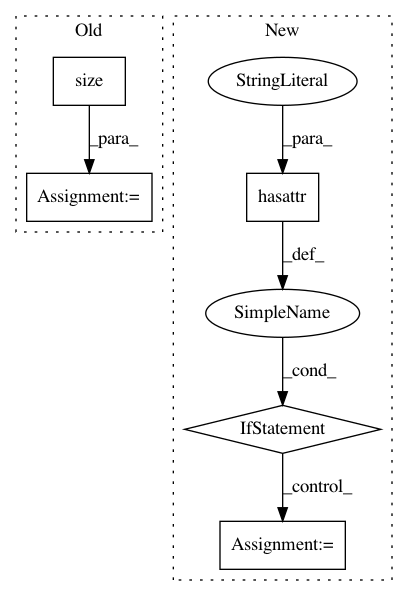

e5a3f2208cc837f75ef312b4bd8b87ea59827bdc,gpytorch/models/abstract_variational_gp.py,AbstractVariationalGP,marginal_log_likelihood,#AbstractVariationalGP#Any#Any#Any#Any#,22
Before Change
if n_data is None:
n_data = len(target)
n_batch = target.size(0)
log_likelihood = likelihood.log_probability(output, target).div(n_batch)
kl_divergence = sum(variational_strategy.kl_divergence()
for variational_strategy in self.variational_strategies()).div(n_data)
res = log_likelihood - kl_divergence
After Change
def marginal_log_likelihood(self, likelihood, output, target, n_data=None):
from ..mlls import VariationalMarginalLogLikelihood
if not hasattr(self, "_has_warned") or not self._has_warned:
import warnings
warnings.warn("model.marginal_log_likelihood is now deprecated. "
"Please use gpytorch.mll.VariationalMarginalLogLikelihood instead.")
self._has_warned = True
if n_data is None:
n_data = target.size(-1)
return VariationalMarginalLogLikelihood(likelihood, self, n_data)(output, target)
In pattern: SUPERPATTERN
Frequency: 3
Non-data size: 5
Instances
Project Name: cornellius-gp/gpytorch
Commit Name: e5a3f2208cc837f75ef312b4bd8b87ea59827bdc
Time: 2018-02-27
Author: gpleiss@gmail.com
File Name: gpytorch/models/abstract_variational_gp.py
Class Name: AbstractVariationalGP
Method Name: marginal_log_likelihood
Project Name: rusty1s/pytorch_geometric
Commit Name: cf1cc19bb79ae4128ef5437279de475835374a46
Time: 2019-03-19
Author: matthias.fey@tu-dortmund.de
File Name: benchmark/runtime/dgl/train.py
Class Name:
Method Name: train_runtime
Project Name: cornellius-gp/gpytorch
Commit Name: 1d3a54e34c9577e677744d2196bb73254c0cdeec
Time: 2018-02-27
Author: gpleiss@gmail.com
File Name: gpytorch/models/exact_gp.py
Class Name: ExactGP
Method Name: marginal_log_likelihood